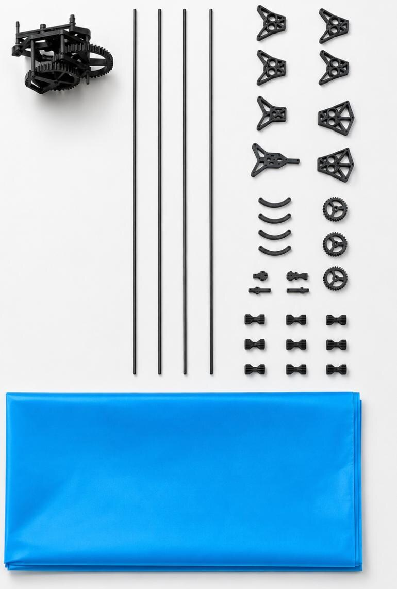

01STAGE / CEREMONY
演艺展示
把一只会飞的蝴蝶，变成舞台、婚礼和文旅空间里的动态装置。
A new kind of low-altitude object
微翮凌空研发仿生昆虫扑翼飞行器，面向演艺展示、科创教育与科研验证，打造可交付、可课程化、可持续迭代的低空产品系统。
From prototype to scene delivery
01 / Product system
01 / 05从展示型蝴蝶到教育型机械结构，再到蜻蜓、蜜蜂与仿生鸟，形成可持续迭代的产品矩阵。
看核心技术02 / Application lanes
02 / 05同一套研发能力，针对不同场景提供展示服务、教育产品与高阶样机。
把一只会飞的蝴蝶，变成舞台、婚礼和文旅空间里的动态装置。
从仿生学到机械结构，再到空气动力学与控制系统，让飞行原理可以被拆开、理解和重新做出来。
以可迭代的扑翼机构和飞控算法为基础，与高校、实验室和未来低空场景共同验证。
03 / Engineering system
03 / 05通过不同驱动方案，把展示稳定性、教育可拆解性与高自由度控制放进同一条研发路径。

04 / Proof of work
04 / 05项目已围绕演艺、婚庆、国际展示与高校科创场景积累早期合作与展示基础。
完成婚庆、展台与舞台展示场景验证。
机械结构与四翅独立驱动路线进入样机迭代。
继续围绕续航、载重、稳定性和结构可靠性优化。
05 / Next horizon
05 / 05展示产品标准化、教育套件放量与科研合作，将成为微翮凌空从样机验证走向产品化的三步。